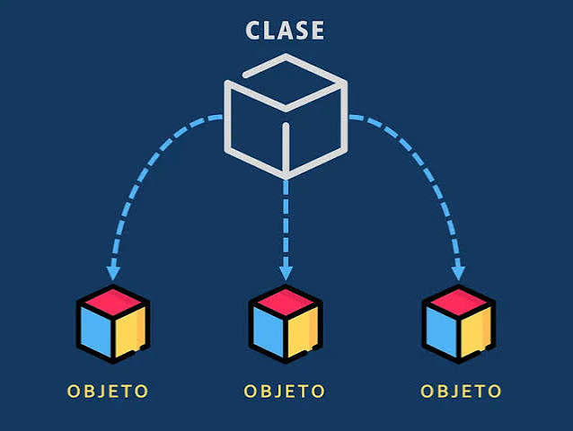
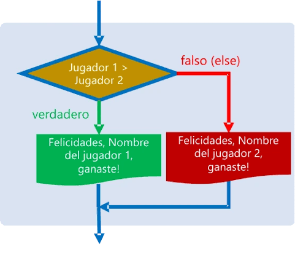
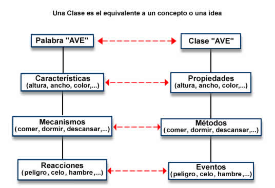
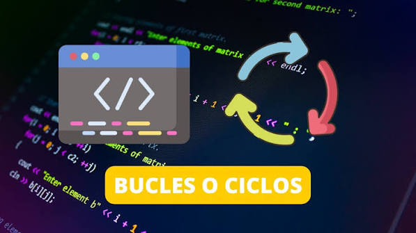
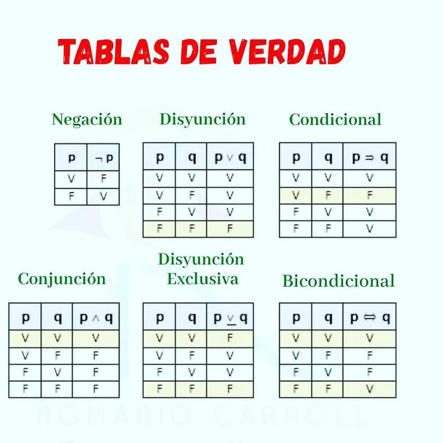

Lectura 1
Programación Orientada a Objetos
Qué es una clase, qué es un objeto y por qué este paradigma cambia la forma de escribir programas.
LeerDesarrollo Web 1 · Objeto Virtual de Información
Este OVI reúne, en un solo sitio, los conceptos con los que arranca todo programador: cómo piensa una computadora en términos de proposiciones, cómo se organiza el código en clases y objetos, y cómo controlan el flujo un condicional o un ciclo.
La lógica computacional es la rama que estudia cómo representar el razonamiento —proposiciones que son verdaderas o falsas, y las reglas para combinarlas— dentro de un lenguaje que una máquina pueda ejecutar. Antes de escribir la primera línea de código, un programador ya está pensando en lógica: decide qué condición debe cumplirse para que algo ocurra, cuántas veces debe repetirse una tarea, y cómo debe organizarse la información para representar el mundo real.
En este curso, esa forma de pensar se traduce en cuatro ideas que se refuerzan entre sí y que este OVI desarrolla paso a paso: la programación orientada a objetos como manera de modelar el mundo en clases y objetos, los condicionales que permiten tomar decisiones, los ciclos que permiten repetir instrucciones, y las tablas de verdad que son la base matemática de toda condición.
Presentar de forma sencilla los conceptos fundamentales de la lógica computacional, apoyados en ejemplos, diagramas y fuentes citadas en formato APA.
Mostrar, a través de video, cómo estas ideas se aplican en ejercicios reales de programación vistos en el curso.
Ofrecer ejercicios cortos e interactivos —sin necesidad de JavaScript— para autoevaluar lo aprendido en cada tema.
Cinco páginas, un mismo hilo conductor: de la forma de organizar el código con objetos, a la forma de decidir y repetir, hasta llegar a la base lógica que sostiene cada condición.

Qué es una clase, qué es un objeto y por qué este paradigma cambia la forma de escribir programas.
Leer
Cómo una función recibe información y cómo un condicional decide qué camino seguir.
Leer
La diferencia entre el molde y la pieza: qué es exactamente una instancia de una clase.
Leer
Por qué repetir instrucciones es una de las tareas más comunes —y más útiles— de un programa.
Leer
La herramienta que resume, para cada operador lógico, todos sus posibles resultados.
LeerComplementa cada lectura con la sección de multimedia y pon a prueba lo aprendido en actividades.